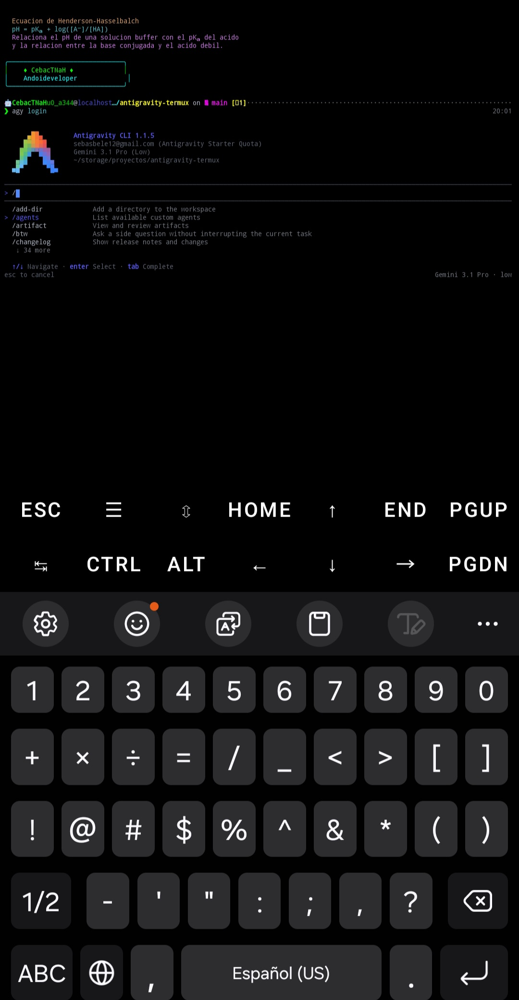

Antigravity CLI en Termux
Instala el asistente de inteligencia artificial de Google directamente en tu terminal Android. Nativo, rápido y sin emuladores.

De la terminal a la IA en 3 pasos
Un bootstrapper compilado para Android (Bionic) ejecuta un engine glibc parcheado sin emuladores ni configuraciones manuales.
Bootstrapper nativo
El binario agy está compilado para Android/Bionic y limpia las variables de entorno que interfieren.
DNS y TLS listos
Configura la resolución DNS (GODEBUG=netdns=cgo) y los certificados TLS de Termux automáticamente.
Engine glibc parcheado
agy.va39 se ejecuta a través del loader glibc. Todo sin proot ni wrappers.
Hecho para Termux, listo para ti
Todo lo que necesitas para tener Antigravity CLI funcionando en tu Android ARM64.
100% nativo
Bootstrapper compilado para Android/Bionic. Nada de emuladores ni máquinas virtuales.
Engine glibc parcheado
Compatible con Termux. Resuelve los problemas de DNS y TLS de forma transparente.
Integración con opencode
Usa los modelos de Antigravity desde opencode con un solo comando.
Instalación con un clic
Script interactivo que verifica el entorno, descarga, respalda y configura todo.
Verificación de integridad
Comprueba que los binarios descargados sean válidos (ELF y tamaño) antes de instalar.
Desinstalación limpia
bash install.sh --uninstall elimina binarios y deja un respaldo por seguridad.
Listo en menos de 2 minutos
Elige tu nivel y copia el bloque de comandos.
# 1. Actualizar e instalar dependencias
pkg update && pkg upgrade -y
pkg install git curl tar -y
# 2. Clonar e instalar
git clone https://github.com/sebastianl1/antigravity-termux.git
cd antigravity-termux
bash install.sh¿Primera vez con Termux? Lee la guía para principiantes antes de empezar.
git clone https://github.com/sebastianl1/antigravity-termux.git
cd antigravity-termux
bash install.shEl instalador verifica el entorno, respalda versiones previas y valida la integridad de los binarios.
Empieza a usar Antigravity
Comandos principales para trabajar con el asistente de IA desde tu terminal.
agy # Iniciar la CLI interactiva
agy login # Autenticar con Google (OAuth)
agy --version # Verificar la versión
agy update # Actualizar a la última versiónIntegración con opencode
Si tienes opencode instalado, el instalador configura automáticamente el plugin opencode-antigravity-auth. Usa los modelos de Antigravity directamente:
opencode run "Escribe un script en Python" --model google/antigravity-gemini-3-proModelos disponibles
Haz clic en un modelo para copiar su ID.
Preguntas frecuentes
Resolvemos las dudas más comunes sobre la instalación de Antigravity CLI en Termux.
Antigravity CLI (agy) es el asistente de inteligencia artificial de Google en tu terminal. Este proyecto permite instalarlo de forma nativa en Termux para Android ARM64, sin emuladores.
No. La instalación es 100% nativa gracias a un bootstrapper compilado para Android (Bionic) y un engine glibc parcheado. No se requieren root, proot, máquinas virtuales ni Cloud Shell.
La versión de Termux en Google Play está desactualizada y abandonada. La versión oficial se mantiene en F-Droid, que es la única compatible con este instalador.
agy.va39 es el engine de Antigravity CLI parcheado para funcionar con glibc en Termux. Es un binario de aproximadamente 160MB que el bootstrapper agy ejecuta mediante el loader glibc.
El instalador solo funciona en dispositivos ARM64 (aarch64). Verifica tu arquitectura con uname -m; debe mostrar aarch64.
Ejecuta agy update para actualizar a la última versión, o vuelve a ejecutar bash install.sh en el repositorio clonado para reinstalar la versión más reciente.
Ejecuta bash install.sh --uninstall en el repositorio clonado. Esto elimina los binarios de $PREFIX/bin. También puedes eliminar la configuración de opencode y los respaldos manualmente.
Sí. El instalador configura automáticamente el plugin opencode-antigravity-auth. Luego usa opencode run "consulta" --model google/antigravity-gemini-3-pro para usar los modelos directamente.